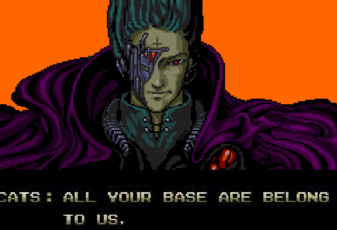

All Your Login Are Belong To [REDACTED]
Today The [REDACTED] Association announced that they would save every username and password students use to login to websites via the public school internet. This announcement comes after the [R]A decided to intrude on student privacy so students would be less worried about having any privacy. The [R]A consulted with world-renowned phycologist Dr. Phil who told them "When students have no expectation of privacy, you can never violate their privacy." The [R]A was swift in enacting this policy, claiming that they wanted students to feel free from secrets. There isn't any word yet from the [R]A as to what they'll do with your logins, but its safe to assume they won't keep them in an unsecured online database, right?